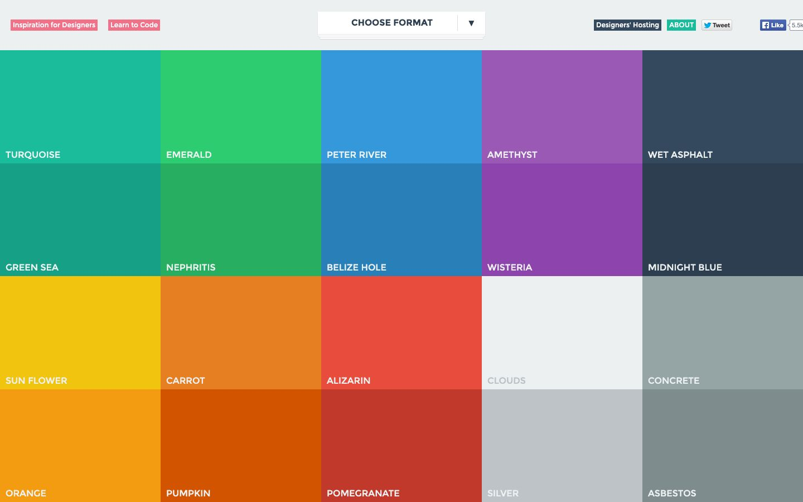

References / Website / 181
Flat UI Colors website, 2014
A palette tool that is one grid of twenty solid color tiles, named Turquoise, Peter River, Alizarin, and so on.
- Source
- flatuicolors.com, Flat UI Colors (archived copy)
- Made
- 2014
- Style
- Flat design (agent-proposed, not yet reviewed by a person)
- Moods
- Bright, playful, systematic
- Evidence
- Captured with
tools/capture.mjs(headless Chrome, 1440 × 900) on 28 September 2026 from the Wayback Machine copy of 5 June 2014, and inspected. The screenshot shows the first viewport; the measurement covers up to four screens. Nothing covers the page. - Reviewed
- Rights
- Third-party work, stored with credit for commentary. License: unverified. Rights policy
The live site now offers many palettes in a different layout.
Observed
- A pale gray top bar holds small solid label buttons in pink, navy, and teal, and a white “CHOOSE FORMAT” dropdown.
- Below it, a five-by-four grid of full-bleed tiles fills the rest of the viewport. Each tile is one solid color with its name in white uppercase at bottom left.
- The rows read: Turquoise, Emerald, Peter River, Amethyst, Wet Asphalt; Green Sea, Nephritis, Belize Hole, Wisteria, Midnight Blue; Sun Flower, Carrot, Alizarin, Clouds, Concrete; Orange, Pumpkin, Pomegranate, Silver, Asbestos.
- Tiles touch each other. There are no borders, gaps, or gradients.
Why it belongs
The twenty names match the color variables of Designmodo’s Flat UI kit (for example $turquoise: #1abc9c, $midnight-blue: #2c3e50), so the page publishes the kit’s palette as a tool.
Measured: 62% of screenshot pixels are saturated, in 7 hue groups; no borders. The dropdown has a 1 px shadow, so 13% of boxes have a shadow and the capture fails the shadow range.
Borrow
Pair each saturated hue with a darker partner of the same hue (Turquoise and Green Sea, Peter River and Belize Hole) for hover and pressed states.
Measured
Machine-extracted by tools/extract-traits.js on . Full measurement.
- Type families
- Montserrat (100%)
- Median radius
- 0 px
- Mean chroma
- 0.36
- Palette
- #ecf0f1 20%
- #7f8c8d 7%
- #bdc3c7 5%
- #ffffff 5%
- #2c3e50 5%
- #27ae60 5%
- #d35400 5%
- #8e44ad 5%

